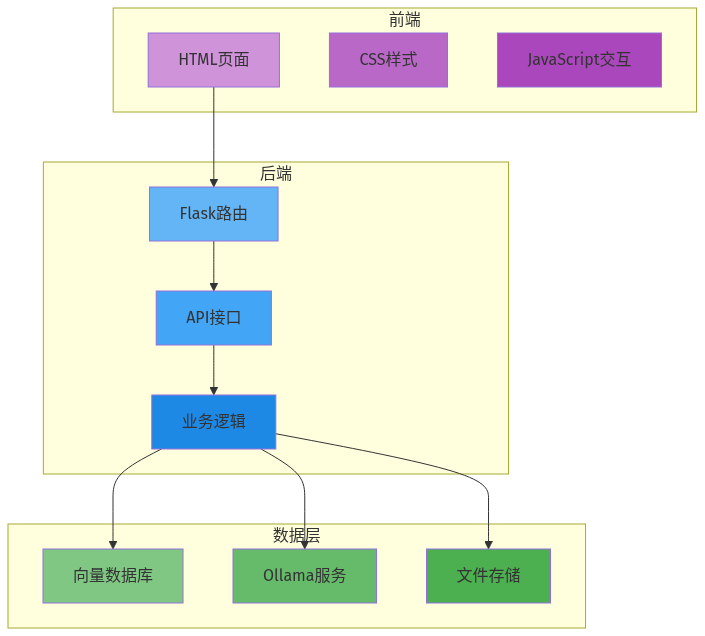

本地大模型知识库系列第09篇 | 界面开发
上一篇我们封装了问答接口，现在需要一个友好的Web界面让用户能够轻松使用。我们将使用Gradio来快速构建一个美观的聊天界面。

01 安装Gradio
# 安装Gradio
pip install gradio02 创建聊天界面
import gradio as gr
from knowledge_base_qa import KnowledgeBaseQA
# 初始化问答助手
qa = KnowledgeBaseQA()
def chat(message, history):
result = qa.answer(message)
if result["success"]:
answer = result["answer"]
if result["sources"]:
answer += "\n\n📚 参考来源:"
for src in result["sources"]:
answer += f"\n- {src['source']}"
answer += f"\n\n⏱️ 响应时间: {result['response_time']}秒"
return answer
else:
returnf"❌ 出错了: {result['error']}"
# 创建Gradio界面
with gr.Blocks() as demo:
gr.Markdown("""
# 📖 本地知识库问答
基于本地大模型的智能问答系统
""")
chatbot = gr.Chatbot(
height=500,
avatar_images=(None, "https://img.icons8.com/color/48/000000/bot.png")
)
msg = gr.Textbox(
label="输入问题",
placeholder="请输入您的问题...",
lines=2
)
submit_btn = gr.Button("发送", variant="primary")
clear_btn = gr.Button("清空对话")
submit_btn.click(chat, inputs=[msg, chatbot], outputs=chatbot)
msg.submit(chat, inputs=[msg, chatbot], outputs=chatbot)
clear_btn.click(lambda: None, None, chatbot, queue=False)
# 启动服务
if __name__ == "__main__":
demo.launch(
server_name="0.0.0.0",
server_port=7860,
share=False
)03 添加文档上传功能
让用户可以随时上传新文档到知识库：
from langchain.document_loaders import PyPDFLoader
from langchain.text_splitter import RecursiveCharacterTextSplitter
def upload_documents(files):
documents = []
for file in files:
loader = PyPDFLoader(file.name)
docs = loader.load()
documents.extend(docs)
text_splitter = RecursiveCharacterTextSplitter(
chunk_size=500,
chunk_overlap=50
)
splits = text_splitter.split_documents(documents)
qa.vector_store.add_documents(splits)
returnf""成功上传并处理{len(files)}个文档，共{len(splits)}个片段。""
# 在界面中添加文件上传组件
file_upload = gr.File(
label="上传文档",
file_types=[".pdf", ".txt", ".md"],
file_count="multiple"
)
upload_btn = gr.Button("上传到知识库")
upload_status = gr.Textbox(label="上传状态", visible=False)
upload_btn.click(upload_documents, inputs=file_upload, outputs=upload_status)⚠️ 常见问题
1. 界面无法访问：检查防火墙和端口配置
2. 上传文件失败：检查文件大小和格式限制
3. 内存占用过高：添加文件大小限制和清理机制
4. 多人并发问题：启用Gradio的queue机制
—— 未完待续 ——
本地大模型知识库系列第09篇
下一篇：性能优化——让知识库更快、更准